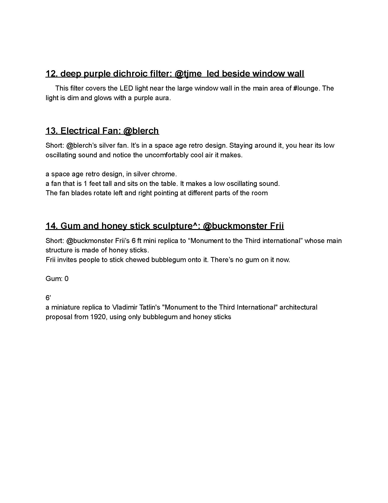
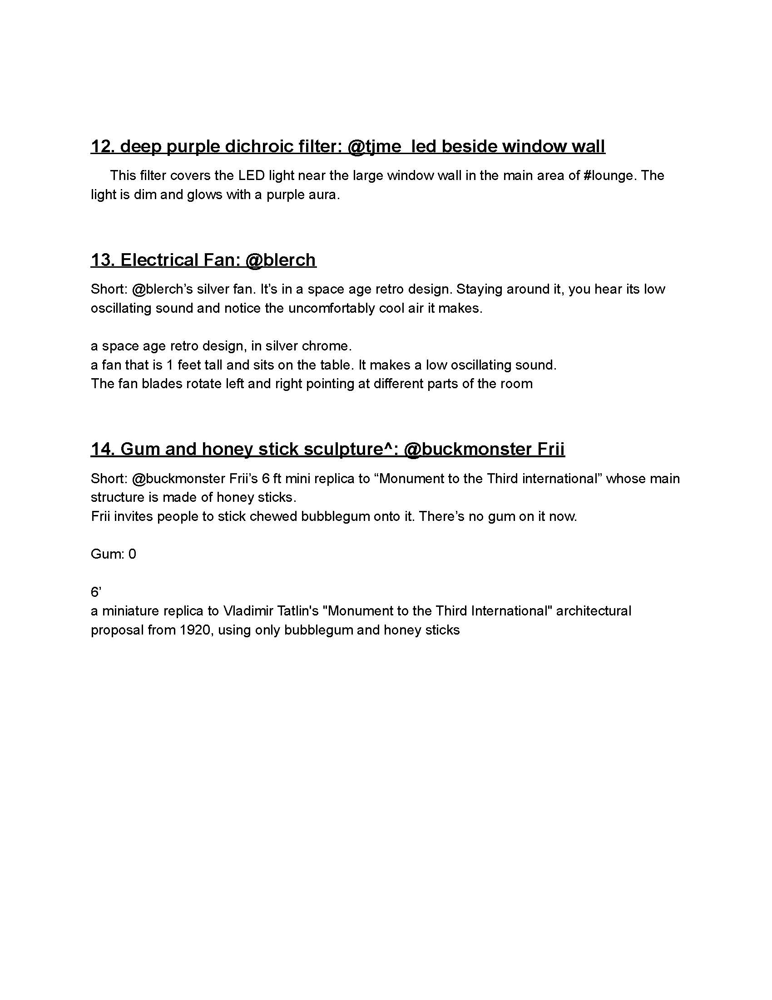
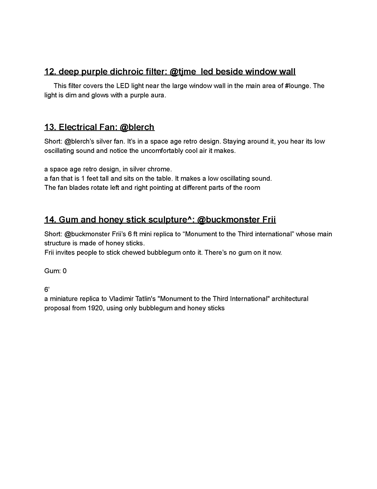
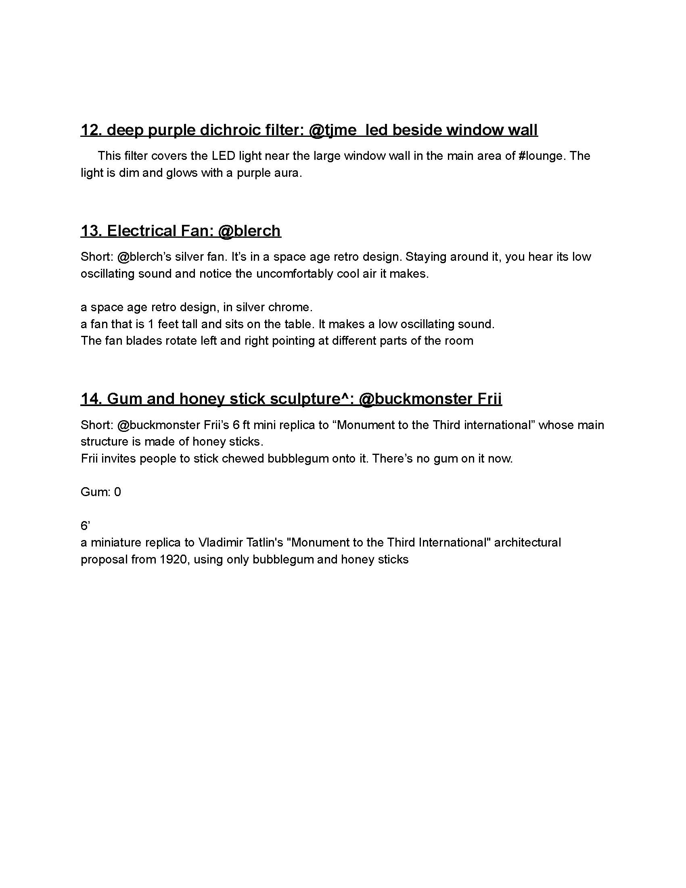

Written Studio is a quasi-artist-residency-program collaboratively developed by Zhengyang Huang and Zhengzhou Huang.
Written Studio is a shared, text based studio environment where the creative processes are broken down into choices of sentences, words, and tones. It reflects on the concept of the artist’s studio as the image of self-ideation, as the stage for artist's performance, or as the presence of working studio assistants. The program, other than a virtual space, is co-conceptualization, co-imagination, and co-writing. Distinct from a mere “ingenious performance", Written Studio involves internal work such as cleaning, arranging, and decorating that influence the mental space of a shared studio.
Imitating the form of text-based MUD (multiplayer real-time virtual world), the program is operated in a multi-channel communication platform where writing is posting, chatting and editing. It allows free creation from sculpture to atmosphere through conversation, collaborative text building, writing and rewriting.
ROLES:
There are two equal roles in Written Studio participants can apply for, artist and assistant. For artists, they are the ones who initialize requests and ideas by starting a writing or co-writing process. For assistants, they process the requests from the artists, participate in the rewriting or collaborative-rewriting process, and they operate the studio environment.
DURATION:
Written Studio are usually hosted for two and half days. Each day has a theme: day one--"Move-in: make it your space", day two--"Build: build-in-progress", day three--"Dialogue: let's not call this a critique". The most recent Written Studio will be hosted in June of year 2020. The specific time hasn't been determined yet.